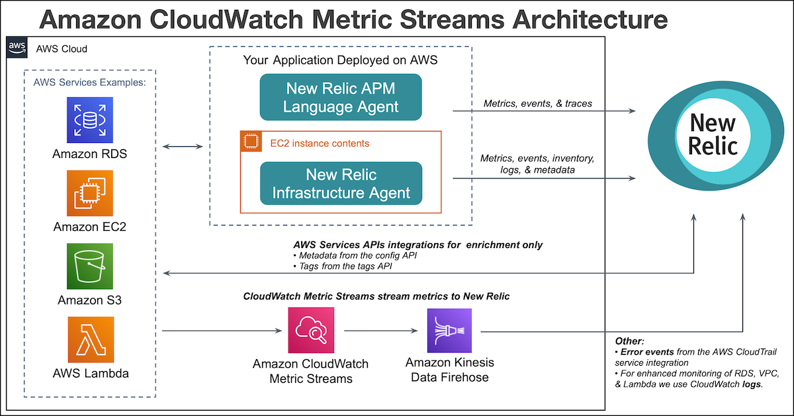
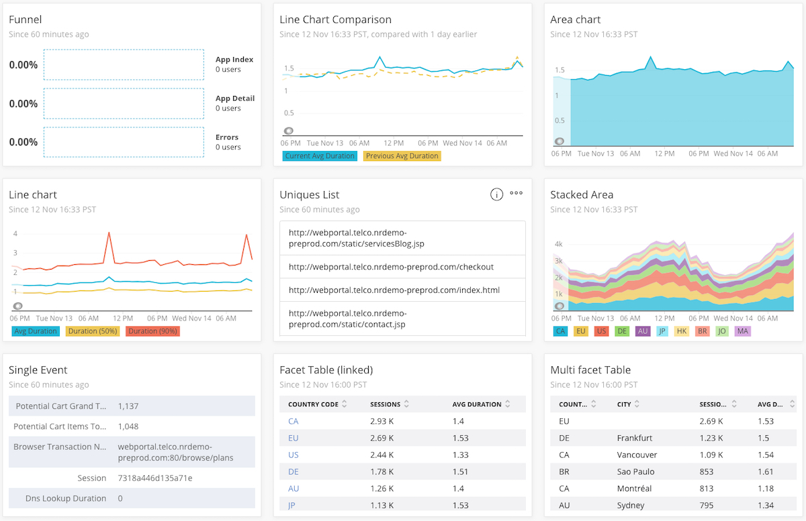
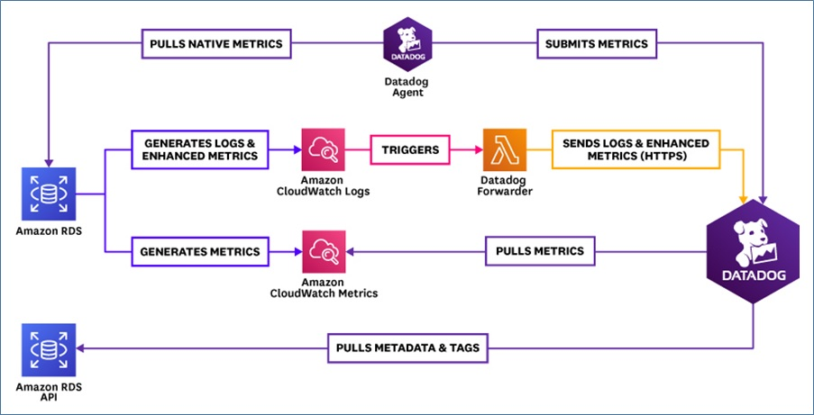
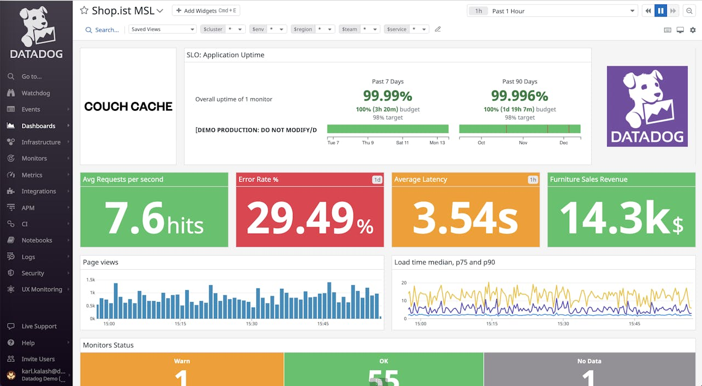

Ngoài tự cài Open Source hoặc dùng Managed Service của AWS, còn có lựa chọn thứ ba: SaaS (Software as a Service) — các nền tảng giám sát thương mại như DataDog, NewRelic, Dynatrace, Grafana Cloud. Bạn chỉ cần cài một agent lên cluster, mọi dữ liệu (metrics, log, trace) được gửi về cloud của nhà cung cấp, và bạn quan sát qua giao diện web của họ. Đây là lựa chọn nhanh nhất và nhiều tính năng nhất, nhưng cũng tốn chi phí nhất.
| Mục đích | Một số giải pháp SaaS thường dùng |
|---|---|
| Full Stack Observability | DataDog, NewRelic, Dynatrace, Grafana Cloud |
| Thu thập / lưu trữ / phân tích log | Sumo Logic, Logz.io |
| Application Performance Monitor (APM) | NewRelic, Dynatrace, DataDog APM, AppDynamics |
| Service Mesh, Tracing | Istio, Honeycomb, Lightstep |
| Resource Provisioning | Cast.ai, Zesty, Karpenter (cloud managed), Spacelift, Terraform Cloud |
NewRelic là nền tảng observability nổi tiếng với khả năng APM (giám sát hiệu năng ứng dụng) mạnh. Trên AWS, bạn thường dùng một agent/collector thu thập dữ liệu từ EKS rồi gửi về tài khoản NewRelic để phân tích.


DataDog là một trong những nền tảng full-stack observability phổ biến nhất: gom cả metrics, log, trace, APM, RUM vào một nơi. DataDog Agent (cài dạng DaemonSet trên mỗi node) tự động khám phá và thu thập dữ liệu từ pod/service của EKS.


Khi nào nên dùng: doanh nghiệp cần observability toàn diện ngay lập tức, có ngân sách, đội ngũ nhỏ hoặc vận hành multi-cloud. Khi nào không nên: ngân sách hạn chế, dữ liệu nhạy cảm không được phép ra ngoài, hoặc quy mô nhỏ không cần nhiều tính năng.
Startup cần giám sát app EKS ngay mà không có DevOps chuyên trách — dùng DataDog/NewRelic cho gọn.
Theo dõi hiệu năng giao dịch (transaction), tỷ lệ lỗi và trải nghiệm người dùng ở mức độ chi tiết cao.
Một dashboard duy nhất cho cả EKS (AWS), GKE (GCP) và server on-premise.